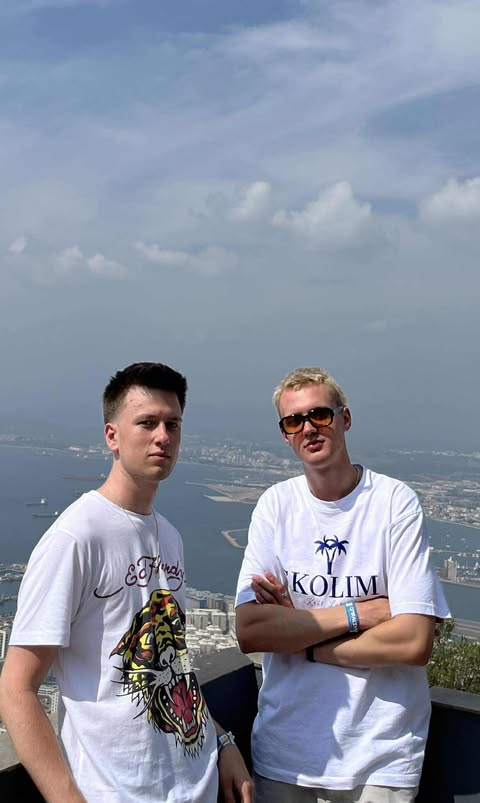
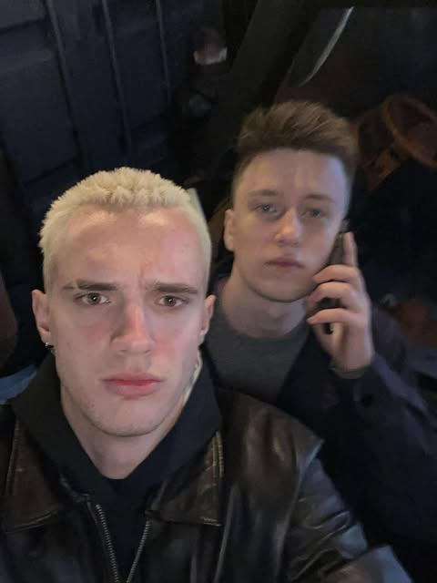

Miły
Przyjaciel, Bliźniak & Najlepszy Glutek


- 

Ten ziomal to legenda. Miły jest goatem w wielu dziedzinach. Stworzyliśmy z nim niesamowicie dużo lore.... Niestety lekarz
postawił miłemu diagnozę: miłoza (bardzo rzadka choroba).
Jak widać nawet najmilsze i najbardziej wesołe chłopaczki czasem dostają wpierdol od losu. Ale bliźniak sie nie poddaje. Walczy dalej niczym Arthur Morgan z tubercolosis. Pomimo wielkiego bólu on wstaje i zwalcza przestępczość w Chelm City. Krzyżowiec Bólu z The Sopot daje we znaki. Pozostawia za sobą zfumblowane torby, ale milosz on... nie pozwoli na to. W tym mieście tylko jedna osoba może fumblowac w tym mieście.... "Nice-Man"
Ale jego choroba daje się ostatnio we znaki..... dlatego teraz zwracam się z prośbą do całego Chełmu, aby wspierać Miłego w walce. Ja jako pierszy dołączam do jego krucjaty ku wybawieniu ludzi od niesprawiedliwości i niezdrowych kości.
- 
Kiedy poznałem miłego nie sądziłem, że będzie dla mnie jak brat bliźniak. Jak wiadomo bliźniaki mają tzw. połaczenie umysłów. Musisz być silny niczym Frodo w ostanim akcie Powrotu Króla. Pamiętaj, że koniec wędrówki coraz bliżej a wszystkie przeciwności losu zostaną pokonane w niedługim czasie.
W szkole znany jako „Najmilszy glutek”. Każdy go uwielbia bo to po prostu Miły. ON JESTY GOATEM W HUJ. Dlatego wiem, że uda mu sie zwalczyć swoją chorobę. Rozpierdoli ją niczym Batman Jokera.
Pamiętaj, Miły — to długa walka. Miejmy nadzieję, że będziesz musiał walczyć krócej, niż Robert Pattinson walczył z łatką aktora ze Zmierzchu.
Stary jesteś najlepszym gościem jakiego znam. NIE DAJ SIĘ BLIŹNIAK. Jeszcze będziesz miał czas żeby znaleźć swoją nisze europejskiego kina.
Ten wspaniały Glutek
na to nie zasługuje
DAJ WSPARCIA
To miłoza (skrajna serdeczność).
Dawka uśmiechu potrzebna natychmiast!!!
Aby pomóc, dorzuć się do Funduszu Brat GOAT (Glutek od antropomorfii andogenicznej)
Wyślij sms o treści:kanibalizm <<<<<< koszykowka
PONIŻEJ LUDZIE KTÓRZY JUŻ POMOGLI MIŁEMU
Top donejtorzy:
Jessica Alba, Bezgłowy Jeździec, Żabson, Maciek i Ubrania, Baddie from Thailand, Baddie from Sweden, Robert Pattison, Batman, Indiana Jones